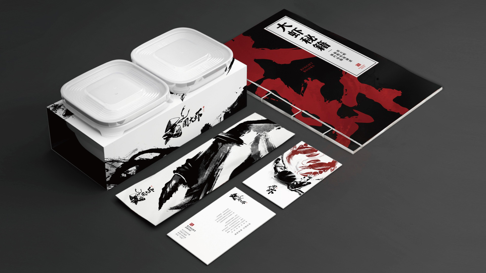
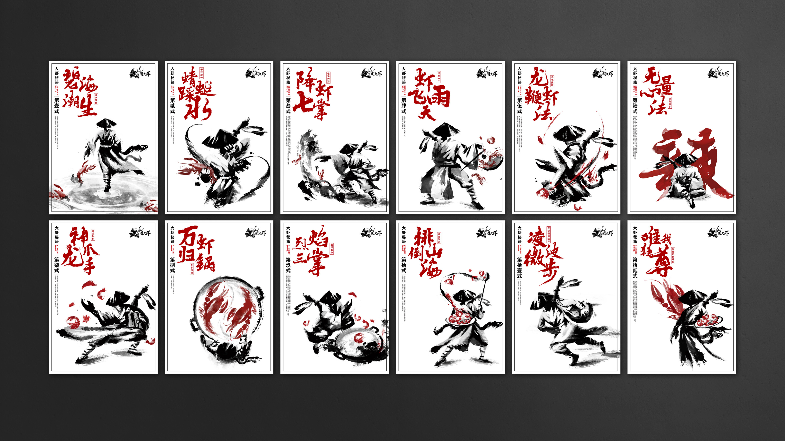
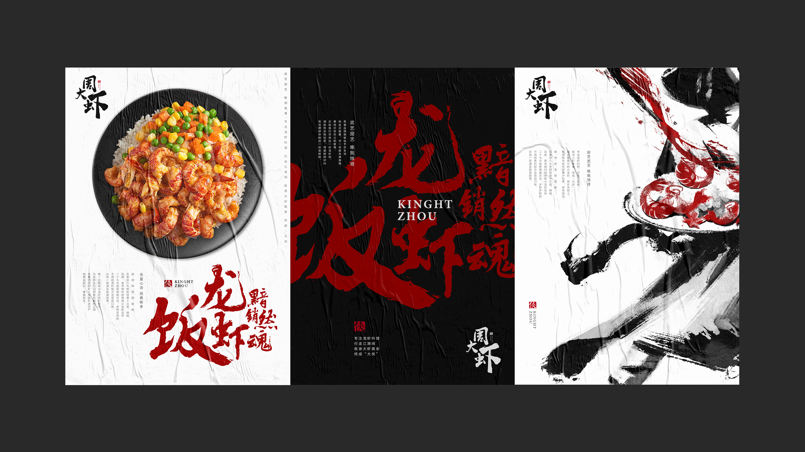
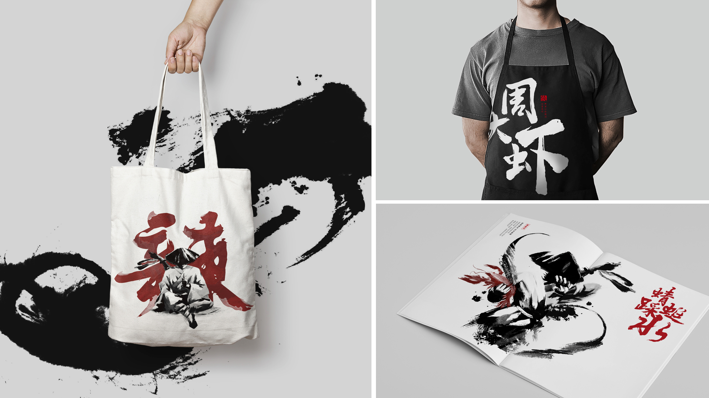
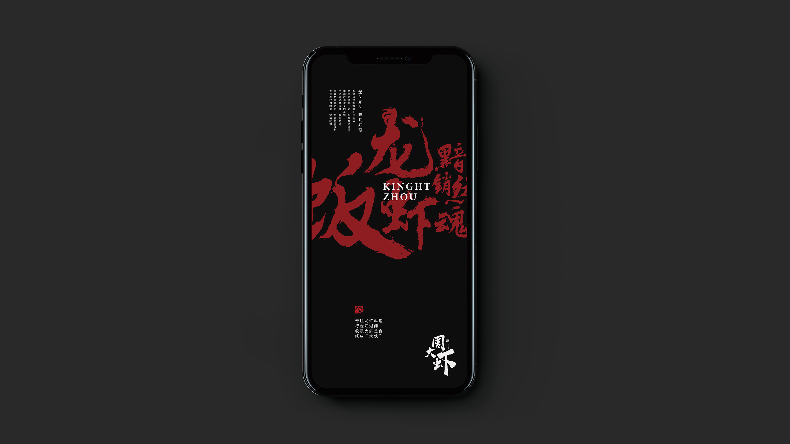

周大虾
周大虾品牌是饿了么新餐饮业务孵化的自营品牌。2016年用独特的武侠IP品牌形象及创新的龙虾饭产品在外卖市场中成功细分出龙虾饭品类。随着外卖市场发展，龙虾饭品类呈多品牌发展趋势，周大虾品牌需要进一步打造，形成更具差异化的品牌形象识别，从而提高品牌认知度。
周大虾产品多为年轻用户群体，但武侠IP形象让多数年轻消费者没有产生品类认知，根据调研分析小龙虾的安全、卫生、健康一直广受年轻用户关注。
为了解决品牌痛点，品牌策略思考上我们对周大虾进行品牌IP建设，内容和表现形式上关联赋能，最终提炼「大虾秘籍」。IP武侠12个招式关联消费痛点，诠释品牌专注、严谨的工艺与制作链路。设计风格上采用武侠新式水墨表现形式，在品牌物料中体现独特的品牌风格，与竞品产生差异化。





